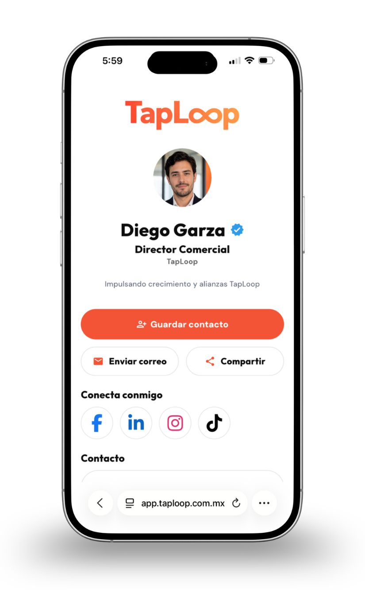

AHORRA 20%

Tarjeta NFC
Tarjeta NFC personalizada con perfil digital incluido.
Elige la opción ideal para ti
Tarjeta NFC personalizada con perfil digital incluido.

Tarjeta NFC metálica premium con perfil digital incluido.
NFC + QR
Una tarjeta, muchas formas de conectar.

Comparativa de tarjetas NFC
Elige entre una tarjeta práctica para uso diario o una presentación metálica de mayor presencia.
Personalización para empresas
Creamos tarjetas NFC y perfiles digitales alineados con tu identidad visual, logo, colores y datos profesionales.


Cada interacción es una oportunidad para dejar una gran impresión.
Qué incluye una tarjeta NFC TapLoop
Diseño, programación NFC, código QR y perfil digital configurados antes de la entrega.
Logo, colores y datos alineados a tu marca.
Contacto, WhatsApp, redes y enlaces en un solo lugar.
Dos formas de abrir el mismo perfil, sin apps.
Validamos enlaces, botones, NFC y QR.

Una solución para administrar perfiles, tarjetas e información profesional de todo tu equipo.
Un perfil para cada integrante.
Logo, colores e información alineados con tu empresa.
Cambia puestos, teléfonos y enlaces sin reemplazar tarjetas.
Gestiona todo tu equipo desde un solo lugar.

Dudas sobre tarjetas NFC
Resolvemos las dudas más comunes antes de elegir tu tarjeta NFC PVC, metálica o solución para equipos.
Es una tarjeta física con tecnología NFC y código QR que abre un perfil digital personalizado con tus datos de contacto, WhatsApp, redes sociales, sitio web, ubicación y enlaces importantes.
La tarjeta PVC es ligera, versátil y adecuada para uso diario, eventos o equipos. La metálica ofrece una presentación más premium y está pensada para directivos, socios y contactos de alto valor.
No. El perfil digital se abre directamente en el navegador del teléfono al acercar la tarjeta o escanear el código QR.
Sí. Dependiendo de la solución contratada, puedes actualizar datos, enlaces, teléfono, puesto o fotografía sin reemplazar la tarjeta física.
Sí. Diseñamos una línea visual corporativa y personalizamos cada tarjeta y perfil digital con los datos de cada colaborador.
Cuéntanos cómo utilizarás tus tarjetas y te recomendaremos la opción adecuada.

Cuéntanos si necesitas una tarjeta NFC digital PVC, una tarjeta metálica o una solución personalizada para todo tu equipo.